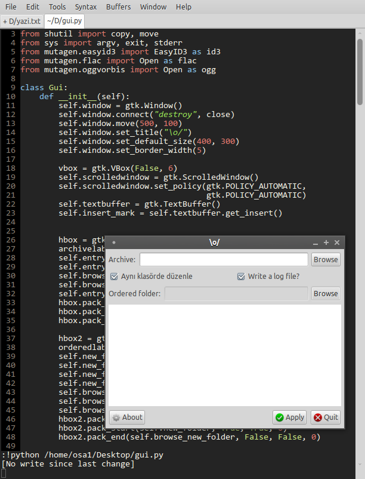

November 15, 2010 - Tagged as: python, django, vim, tr.
Python’da IDE/editor olayı çok sıkıntılı geliyor bana. Aslında bir sürü alternatif var ama hepsi bazı sebeplerden dolayı çok kötü geliyor bana. Örneğin Eclipse/Pydev çok ağır geliyor, sahip olduğu özelliklerinin çoğunu en azından şimdilik kullanmıyorum. NetBeans aynı şekilde, üstelik Python için neredeyse hiçbir şey sağlamıyor. Sadece Aptana Studio işime yarıyor, o da HTML/CSS desteği ile PyDev’i buluşturduğu için, Django’da çok yardımcı oluyor.
Editor deyince, Gedit, Kate gibi araçlar için bir sürü eklentiler var, fakat emin olabilirsiniz, neredeyse tüm eklentileri denedim, hiçbir türlü işe yarar hale gelmiyorlar.. Aradığım özelliker: syntax renklendirme, otomatik indentation(düzgün çalışacak, return’den sonra diğer bloka geçmeli mesela), açtığım [ ( { " gibi karakterleri nerde kapatığımı görmeliyim, tek tuşla programımı çalıştırabilmeliyim, hatta gerekirse parametreler ekleyip onları başka kısayollara atayabilmeliyim, mümkünse file browser..
Vim, Emacs gibi araçlar en baştan beri aklımdaydı fakat öğrenmesi/kurulumları çok zaman aldığından bir türlü başlayamıyordum, Emacs öğreneceğim vakitle Common Lisp öğrenmek daha mantıklı geliyor örneğin. Üstelik bu araçlar için tüm detayların olduğu, tek bir tutorial gibi birşey yok. Araştırıp öğrenmek gerekiyor.
Common Lisp ve Haskell ile ilgilenmeye başlayınca farkettim ki, belki de dünyadaki tüm diller için ortak 2 tane editor var, Vim ve Emacs. Haskell yazacaksınız, IDE/editor arıyorsunuz, ama Eclipse gibi devasa araçlara ihtiyacınız yok, hızlı, pratik bir çözüm arıyorsunuz. 2 alternatifiniz var: Vim ve Emacs. Common Lisp için aynısını isteseniz, bu sefer tek alternatif, Emacs. Ki yeterince öğrendikten sonra Java için bile kullanılabiliyorlar(Java için bile diyorum, çünkü Java’da gerçekten gelişmiş IDE özelliklerinize ihtiyacınız oluyor, yeni başlayan ben bile Eclipse’in özelliklerini kullanıyorum).
Python’da da basit, hızlı, kullanışlı bir editor ararken Komodo Edit’i keşfettmiştim. Aslında bayaa kullanışlı bir araç, kendi çalıştırma komutlarınızı kolayca tanımlayabilir, çalıştırırkenki çevre değişkenlerinizi belirleyebiliyorsunuz falan. Kullanışlı ve küçük bir araç, ama çok büyük bir sorunu var; çok yavaş. Birkaç yüz satırlık kodda bile rahatlıkla gezinemiyorum, her nedense çok yavaş çalışıyor.
Dolayısıyla bu sabah yine Vim’e bir şans vermeye karar verdim. Emacs bana hep Vim’den daha karışık gibi gelmiştir. Ayarlarıyla, kısayollarıyla falan. GVim kurulumu yaptım, sıfırdan başlamak yerine birkaç farklı kaynaktan vim ayar dosyalarını incelemeye başladım(.vimrc). Neticede birkaç yerden derlediğim ve kendi kattığım birkaç satırla kendi Vim’imi oluşturdum(bu arada resimdeki arşiv düzenleyinin arayüzünün son hali):

Henüz Vim’in çoğu özelliğinden faydalanamıyorum ve metin düzenlerken sıkıntılar yaşıyorum(hatta bu yazıyı yazdığım sırada nasıl tüm kelimeyi sileceğimi, ve kopyaladığım bir metini nasıl yapıştıracağımı bile bilmiyordum), ama en azından tam istediğim özelliklere sahip bir Python editorum oldu.
Oturup vimtutor çalışarak öğrenmek yerine, işimi yaparken öğreneceğim artık. .vimrc dosyamı buradan indirebilirsiniz. Çoğu satırda açıklama var zaten, kısayollar genelde bana ait. Eski alışkanlıklarımdan kurtulamadığımdan, alt+w, alt+s, tab değiştirmek için alt+oklar gibi kısayollar ekledim.
Bu arada, Google ile kolaylıkla binlerce kaynak bulunabilir tabii ki, ama ben yine de kendi faydalandığım kaynakları vereyim: